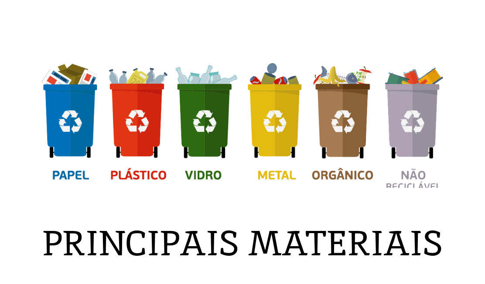

Descubra como pequenas mudanças no seu dia a dia podem fazer uma grande diferença para o planeta! Clique para ler dicas práticas e inspiradoras sobre reciclagem, reutilização e sustentabilidade. Juntos, podemos transformar o futuro do nosso planeta!
LinkDescubra como duas escolas em Caraguatatuba estão transformando o Dia Mundial do Meio Ambiente com o [Re]Ciclo de Cinema 2024, uma jornada educativa sobre reciclagem para quase 1.000 alunos!
LinkParticipe do 12º Drive-Thru da Reciclagem em Campo Grande! Descarte seus resíduos de forma sustentável sem sair do carro, de 6 a 8 de junho. Ajude a preservar o meio ambiente e contribua com doações para famílias necessitadas!
Link
Brasil lidera reciclagem de embalagens agrícolas: Conheça o Sistema Campo Limpo e sua contribuição para a sustentabilidade ambiental, evitando toneladas de CO2 na atmosfera e transformando resíduos em novos produtos.
Link
Aumente a reciclagem de vidro no Brasil: Circula Vidro lança iniciativa na Câmara dos Deputados com foco em educação ambiental em escolas e bares, buscando elevar índices para 40% até 2032. Com sede em Brasília, a entidade visa a economia circular, reaproveitando materiais e evitando poluição em praias e aterros.
Link
Aviso em Porto Alegre: Com a previsão de chuvas intensas a partir do final de semana, a Prefeitura pede que a população não descarte lixo nas ruas a partir de sexta-feira para evitar novos alagamentos. Após enchentes de maio, moradores temem novo acúmulo de resíduos, enquanto a gestão municipal intensifica ações de limpeza e drenagem para minimizar impactos.
Link